Can you identify the medium, distinguish growth from
a differential reaction, and explain what the result means?
What Makes a Medium Selective?
Selective media contain substances that inhibit
some microorganisms while allowing others to grow.
Ask: Is growth present, reduced, or absent
under the assigned test conditions?
What Makes a Medium Differential?
Differential media reveal visible differences
between organisms that grow, such as a colony
color, a medium color change, or hemolysis.
Ask: Among the organisms that grew,
what reaction is visible?
A medium can be both selective and differential.
Read growth first, then interpret the differential
reaction. No growth is not the same as a negative
fermentation result.
📸 Can I Identify the Reaction?
Use the plate label and assigned medium formulation
along with its appearance. Color alone does not
reliably identify an unknown medium.
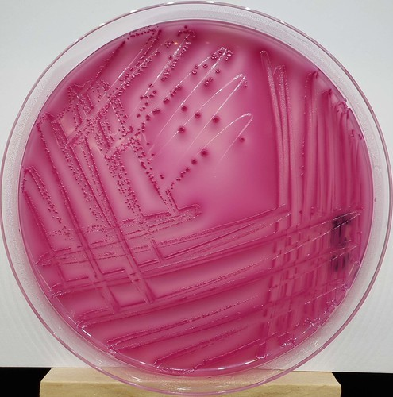
MacConkey: Lactose Positive
Image placeholder
MacConkey: Pink Colonies
Growth with pink-to-red colonies supports
lactose fermentation.
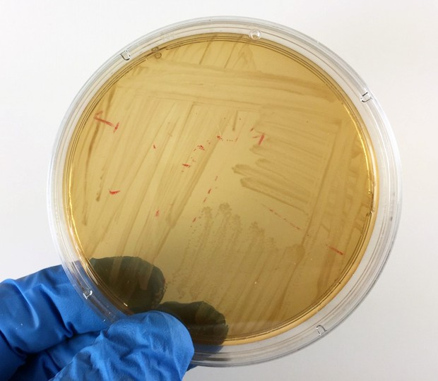
MacConkey: Lactose Negative
Image placeholder
MacConkey: Colorless Colonies
Growth without pink colonies supports
no lactose fermentation detected at the reading time.
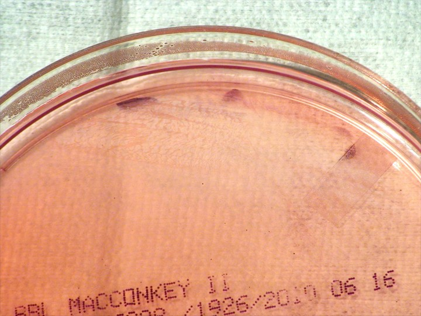
MacConkey: No Growth
Image placeholder
MacConkey: No Growth
No visible growth under the test conditions.
Lactose fermentation cannot be interpreted.
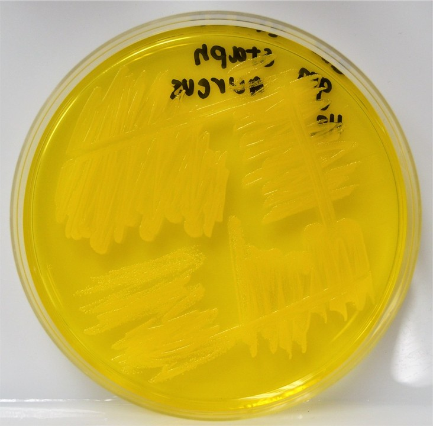
MSA: Mannitol Positive
Image placeholder
MSA: Growth and Yellow Medium
Growth indicates salt tolerance; yellow
surrounding medium supports acid production
from mannitol fermentation.
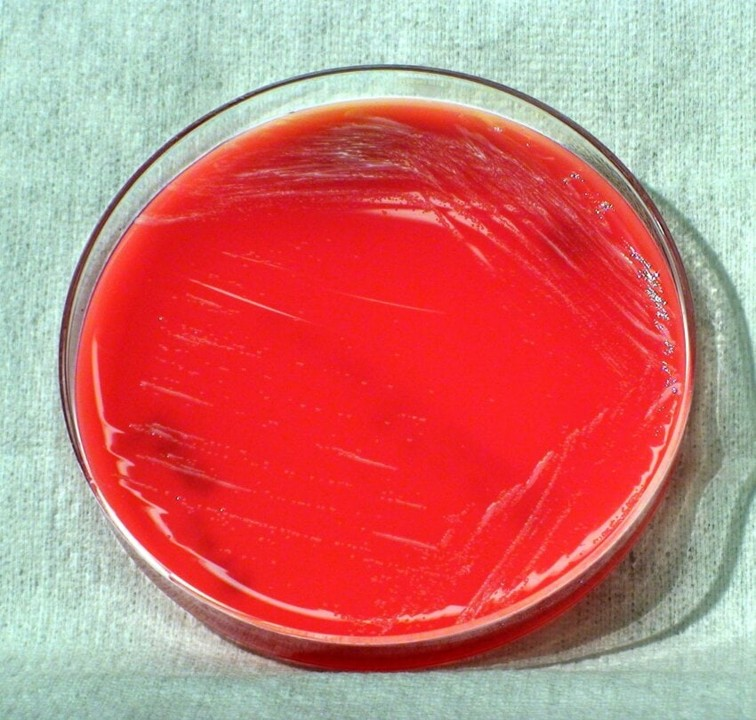
MSA: Mannitol Negative
Image placeholder
MSA: Growth Without Yellowing
Growth indicates salt tolerance; surrounding
medium remaining pink/red supports no mannitol
fermentation detected at the reading time.
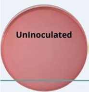
MSA: No Growth
Image placeholder
MSA: No Growth
No visible growth under the test conditions.
Do not report a mannitol fermentation result.
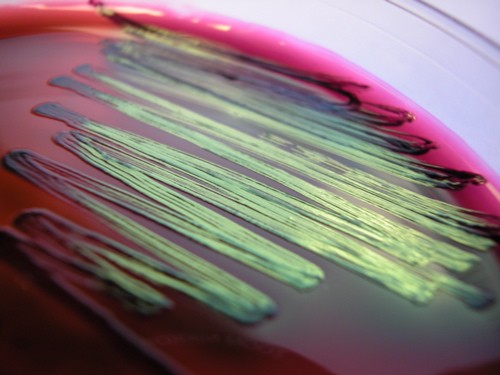
EMB: Metallic Sheen
Image placeholder
EMB: Green Metallic Sheen
On Levine EMB, dark colonies with a green
metallic sheen support strong lactose
fermentation. This is not a species identification.
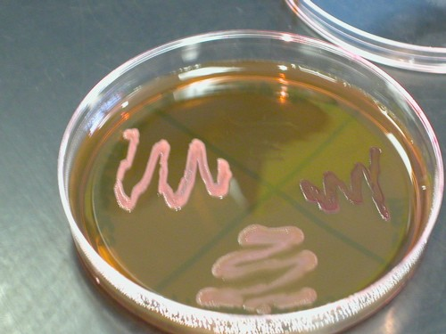
EMB: Colored Colonies
Image placeholder
EMB: Pink-to-Purple Colonies
On Levine EMB, colored colonies support
lactose fermentation. A metallic sheen
is not required for a positive reaction.
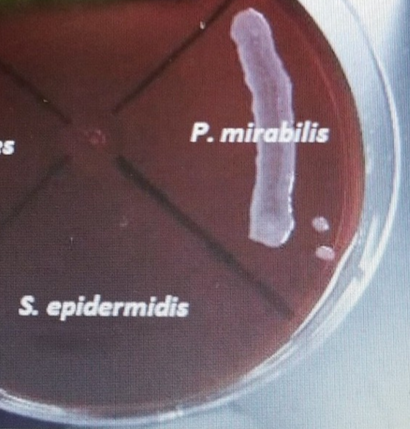
EMB: Pale Colonies
Image placeholder
EMB: Pale or Colorless Colonies
On Levine EMB, growth with pale or colorless
colonies supports no lactose fermentation
detected at the reading time.
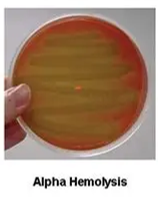
Blood Agar: Alpha
Image placeholder
Alpha Hemolysis
Greenish-to-brownish discoloration around growth;
traditionally described as partial hemolysis.
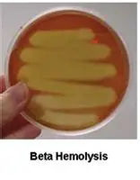
Blood Agar: Beta
Image placeholder
Beta Hemolysis
Complete red blood cell lysis produces
a clear zone around growth.
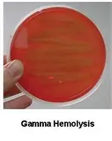
Blood Agar: Gamma
Image placeholder
Gamma: No Hemolysis
Growth without visible clearing or
hemolytic discoloration of the surrounding agar.
Can I Compare the Media?
Medium
Classification
Selective Component
Differential Feature
What to Observe
MacConkey agar
Selective and differential
Bile salts and crystal violet inhibit
many Gram-positive bacteria.
Lactose fermentation;
neutral red is the pH indicator.
Growth, then pink/red versus
pale/colorless colonies.
Mannitol fermentation;
phenol red is the pH indicator.
Growth, then yellowing of the
surrounding medium.
Levine EMB agar
Selective and differential
Eosin Y and methylene blue inhibit
many Gram-positive bacteria.
Lactose fermentation changes
colony coloration.
Dark or pink/purple colonies,
possible metallic sheen, or
pale/colorless colonies.
Standard blood agar
Enriched and differential;
not ordinarily selective
None in a standard formulation
without selective additives.
Hemolysis of red blood cells.
Greenish discoloration, clearing,
or no hemolytic change.
Formulation matters. This guide uses standard
MacConkey agar, standard mannitol salt agar,
Levine EMB, and standard blood agar. Other
formulations may contain different carbohydrates
or selective additives.
Can I Interpret a Plate in Order?
Use This Four-Step Check
Confirm the medium name from the plate label
or course information.
Determine whether visible growth is present.
If growth is present, describe the relevant
colony color, medium change, or hemolytic zone.
Interpret only the property tested by that
medium. Do not jump directly to species identity.
MacConkey:
Growth present with pink colonies; lactose
fermentation detected.
MSA:
Growth present with yellow surrounding medium;
salt tolerance and mannitol fermentation detected.
Blood agar:
Growth present with clear zones around colonies;
beta hemolysis observed.
Interpret results using the assigned reading time,
appropriate controls, and your course protocol.
No growth can have causes other than the medium's
selective ingredients.
Quick Interpretation Practice
Practice 1: MacConkey
Colonies are present, but they are pale
rather than pink. What can you report?
Reveal explanation
Growth is present, with no lactose
fermentation detected at the assigned
reading time. This does not identify
the organism to species.
Practice 2: MSA
Colonies grow, but the surrounding agar
remains pink/red. What two observations matter?
Reveal explanation
Growth supports salt tolerance under the
test conditions. The absence of yellowing
supports no mannitol fermentation detected
at the assigned reading time.
Practice 3: Blood Agar
Colonies have a clear zone around them.
Which hemolytic pattern is present?
Reveal explanation
Beta hemolysis: complete red blood cell
lysis produces visible clearing around growth.
Practice 4: No Growth
An MSA plate has no visible colonies.
Should you report mannitol fermentation
as negative?
Reveal explanation
No. Report no visible growth under the
test conditions. Without growth, the
fermentation result is not interpretable.
⚠ Common Student Mistakes
Confusing selective growth with a positive
differential reaction.
Calling an organism a nonfermenter when it
did not grow on the medium.
Assuming all organisms that grow on MSA
ferment mannitol.
Looking only at colony pigment on MSA instead
of the surrounding medium's indicator color.
Assuming a green metallic sheen on EMB
proves a species identity.
Confusing greenish alpha discoloration with
the clear zone of beta hemolysis.
Calling standard blood agar selective simply
because it contains blood.
Identifying an unknown medium from its color
without checking its label or formulation.
✅ Ready for the Quiz?
This checklist is for self-review. Responses are
not submitted or saved by this page.